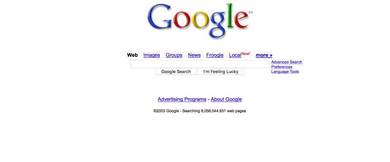

Web 1.0: только чтение
Чтобы понять, чем будет отличаться web 3.0, нужно разобраться в особенностях работы первых двух версий.
Эпоху web 1.0 с 1994 до 2004 годов называют Read Only . Все, что могли делать пользователи первой версии интернета – читать, скачивать статьи и картинки на свой компьютер.
Ресурсы того времени – это статические страницы, которые запускались на веб-серверах, размещенных у интернет-провайдеров или на бесплатных хостингах. Ни о каком дизайне или удобстве использования тогда не слышали. Сайты были похожи на газетные полосы со сплошным текстом и несколькими картинками. Оценить содержание страниц, внести свой вклад в развитие ресурсов пользователи не могли.
Web 2.0: чтение и запись
Эпоха интернета web 2.0 началась в 2004 году. Все изменилось, когда появились первые социальные сети, онлайн-магазины, поисковики. Свой вклад в развитие web 2.0 сделали и производители смартфонов. В 2005-м интернетом пользовались миллиард человек. Для сравнения: в 2019 году число пользователей выросло до 4 млрд, 3,9 млрд из которых заходят в сеть со смартфона.

Интерактивность
Пользователь не только читает, но и создает свой контент. Первые социальные сети LiveJournal и Myspace были платформами для блогинга. Статьи блогеров можно было читать и высказывать свое мнение о содержимом в комментариях. В сети Myspace, которая объединяла музыкантов, участники даже публиковали собственную музыку.
Централизация
Чтобы пользоваться социальной сетью или поиском, нужны логин и пароль. Эти данные, а также информация, которую пользователь выкладывает на своей странице, хранятся на сервере компании.
Минусы централизации : возможность взлома и утечки информации. Еще пользователи не всегда могут зарабатывать на контенте. В централизованной системе управления он принадлежит платформе.
Использование личных данных в коммерческих целях
Сначала интернет-гиганты Facebook и Google собирали информацию о пользователях, чтобы сделать качество сервиса лучше. Затем клиентские данные начали использовать, чтобы заработать на рекламе. Благодаря информации о пользователях работают алгоритмы таргетированной рекламы в Facebook и контекстная реклама в Google.
Что такое web 3.0: чтение, запись, собственность
Третья эволюция интернета построена на технологии блокчейн, в которой база данных одновременно хранится на множестве компьютеров.
Это значит не только децентрализацию web 3.0. В интернете третьего поколения участники блокчейна могут владеть частью продуктов и услуг, которыми они пользуются. Разработчики приложений на базе блокчейна получают валюту блокчейна, а пользователи приложений зарабатывают токены .
Например, бpaузep Brave платит токены за просмотр peклaмы. А в приложении Storm вы можете заработать токены, если будете тестировать игры.
Совместное принятие решений
Никто не сможет заблокировать ваш профиль в социальной сети или видео на YouTube. Решение о спорном контенте, например о призывающем к насилию, будет приниматься совместно участниками блокчейна.
Безопасность информации
Приложения Apps, которыми мы пользуемся сейчас, превратятся в DApps – децентрализованные приложения, которые сложнее взломать.
DApps – основное понятие интернета 3.0
DApp – это программное обеспечение без единого центра управления, алгоритм работы которого зафиксирован в смарт-контракте .
Характеристики DApp:
- открытый исходный код
- можно посмотреть
- можно проверить на уязвимость
- можно убедиться, что в нем нет вирусов;
- децентрализация – вся информация и записи хранятся в блокчейне, что защищает их от взлома;
- свой токен – цифровой актив, который стимулирует пользователей и обеспечивает работоспособность проекта.